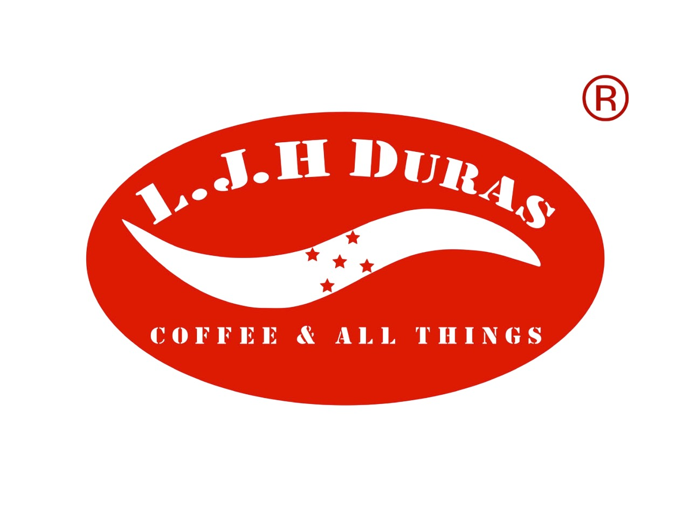

洪都拉斯花香・茶感
白花 · 佛手柑 · 杨桃
¥180半磅 · 参考价

从产地的风土，到杯中的余韵。
DURAS 陪你找到属于自己的风味。

COFFEE & ALL THINGS不必熟悉每一个产区。
从你喜欢的味道开始。
从明亮花果，到醇厚尾韵。先认识这几款。
白花 · 佛手柑 · 杨桃
花香 · 山竹 · 佛手柑
复合坚果 · 饱满立体 · 浓郁丝滑
风味依原始豆单呈现。标签为系列示意，实际规格与供应请咨询。
 D / 03
D / 03我们用产地、品种与处理法，记录咖啡的个性。花香、果韵、蜂蜜与坚果，每一个风味词，都是邀请你亲自探索的起点。
咖啡日常、选购与服务，在官方网站找到共同的入口。
官方账号陆续筹备中。
所有平台，将在这里汇聚。